Coronavirus (COVID-19)
Últimos datos y Orientación Detallada
Traducido al Español por Mónica Muñoz Torres, PhD
Actualizado el Mar 18, 2020 7:11 PM (UTC)

Pueden compartir este documento como gusten, usando este vínculo electrónico (URL): www.flattenthecurve.com/es, por Facebook, o por Twitter. Tengan en cuenta que este documento evoluciona conforme la situación cambia. La velocidad es clave, así que tener un buen plan ahora mismo es mejor que tener un plan perfecto más tarde. Si quieres ayudarnos a traducirlo a otros idiomas, por favor sigue estas instrucciones. Ya hay esfuerzos de traducción al Alemán, Francés, e Italiano. La versión original fue escrita en Inglés, y la puedes ver en la página flattenthecurve.com
Noticias: Hemos creado un boletín informativo para ayudar a mantenernos al día con todos los acontecimientos relacionados con COVID19 y los esfuerzos de todos para #AplanarLaCurva. Presiona aquí para registrarte (sin correo spam, sin publicidad o uso comercial, etc. ¡Y es gratis!).
Hemos incluido vínculos electrónicos a las fuentes originales como formas de atribución y referencia.
En casi todos los casos (excepto cuando se trata de un hilo en Twitter que Mónica tradujo, o una guía en Español producida por los CDC en EEUU), los vínculos llevan a información disponible en Inglés. Lamentablemente, no hemos podido encontrar mucha información similar en Español. Si conoces otras de fuentes de información que ya han preparado traducciones para alguno de los sitios de internet e hilos de Twitter, y/o si trabajas en ciencias y quieres ayudarnos a mejorar esta traducción, escríbenos un mensaje privado en twitter.com/monimunozto.
Si quieren contribuir con este sitio, ya sea agregando contenido para esta página, o escribiendo un nuevo documento, presiona aquí o contáctanos aquí.
Sí: la situación es grave.
Mantengan la calma, pero no descarten las advertencias de las agencias de salud pública respecto al Coronavirus. El consenso emergente es que pudo haber sido posible contener el virus hace unas semanas, pero ésto ya no es realista. A pesar que la experiencia de China nos dió tiempo de ventaja, lo desperdiciamos. Estamos entrando en la fase de pandemia, que será seguida por otra de recurrencia estacional, a menos que (y hasta que) encontremos una vacuna (lo que quizás no ocurra hasta dentro de unos 18-24 meses, si tenemos suerte).
Ésto no es una gripe normal
Ni en el mejor de los casos.
La tasa de mortalidad estimada por la Organización Mundial de la Salud (OMS), de un 3.5%, es un promedio de aquella de todos los grupos de edades. La OMS ha proporcionado una gran cantidad de datos obtenidos a través de encuestas, que contradicen los altos números de casos reportados sin síntomas. El consenso dice que las personas con más de 60 años de edad y aquellas con condiciones de salud delicadas son las más impactadas.
Al principio de la epidemia hubo esperanzas de que ese 3.5% fuera una sobreestimación; sin embargo, conforme la evidencia avanza, esta esperanza mengua. Hasta ahora, los números que han salido de Corea del Sur son los más optimistas en el mundo (0.7% de los casos fueron mortales); sin embargo, a) la media de la población de Corea del Sur es más joven, b) Corea del Sur (a diferencia que en los Estados Unidos) ha actuado correctamente desde el principio del brote: han emprendido una campaña masiva para examinar a la población frente al virus, a la par que han sido radicalmente transparentes, han recibido apoyo del público, y han hecho pruebas a los ciudadanos sin que tuvieran siquiera que bajar de su vehículo!. Si esta cepa de Coronavirus es como otros virus, puede que las medidas contundentes para reducir su transmisión también reduzcan la ‘dosis’ promedio de partículas virales que ocasionan cada caso de la enfermedad; puede que ésto reduzca en promedio la severidad de la enfermedad, y que disminuya las tasas globales de mortalidad. El tiempo lo confirmará.
Incluso SI la tasa real de mortandad del COVID-19 fuera tan solo del 1% (como ha sido hasta ahora el caso del crucero Diamond Princess), esa tasa ya sería diez veces más alta que la de la gripe (o influenza) estacional común.
“Las 61,099 muertes atribuidas a la gripe (o influenza) en EEUU durante una temporada tan severa como la del 2017-2018, equivalen a un 0.14% de los 44.8 millones de casos de enfermedades con síntomas gripales. Hubo así mismo 808,129 hospitalizaciones relacionadas con la gripe, un total de 1.8% de los casos detectados. Asumiendo un brote de tamaño similar en los Estados Unidos, multiplique la mortandad y tasa de hospitalización por 5 ó 10, y obtienen números aterradores: 300,000 a 600,000 muertes, y de 4 a 8 millones de hospitalizaciones en un país que tiene 924,107 camas de hospital” (para todas las enfermedades combinadas).
Para la mayoría de las personas, la infección se desencadena en una enfermedad leve pero transmisible; así es como se difunde. A aquellos que se enferman con mayor severidad, la enfermedad termina afectándolos muchísimo. La mortandad no es el único factor que debemos considerar: Italia reporta que el 10% de los casos necesitan, además de hospitalización, cuidados intensivos - y que lo necesitan por un periodo de unas 3-6 semanas. Esto es insostenible.
Lo primero es lo primero
Se ha derramado mucha tinta con especulaciones acerca de la “verdadera” tasa de mortandad; pero aún estamos en la fase inicial de la pandemia, y podría llevar años determinar con precisión cuál es esa tasa. PERO, sabemos que está entre 0.5% y el 4 por ciento; este rango aporta la evidencia adecuada para ordenar acciones preventivas que sean decisivas, inmediatas, y a gran escala. Sin duda, es posible ver que lo más importante que podemos hacer es aplanar la curva de la epidemia para que nuestros sistemas de salud puedan lidiar con la situación, y para dar tiempo a los científicos para investigar posibles vacunas y tratamientos.
Ya está aquí.
Asuma que el virus ya llegó a su ciudad, pueblo, lugar de trabajo, iglesia, etc. Es casi seguro que ya está allí y sencillamente aún no se ha detectado porque hay escasez de tests (exámenes médicos) de detección. Aún más, hay 6 estados que todavía no tienen ni un solo laboratorio capacitado para examinar a un paciente y diagnosticar si tiene esta enfermedad, incluso teniendo los materiales para llevar a cabo el test. Los cálculos provenientes de Italia dicen que al inicio del brote, el número real de infecciones era cuatro veces más alto que el número de casos que era posible confirmar en ese momento. La transmisión ya había estado ocurriendo, imperceptiblemente entre los miembros de la comunidad en Seattle, semanas antes de ser detectada. La ciudad de Seattle y la Universidad de Stanford han estado haciendo un muy buen trabajo preparándose para ponerse al día con sus propios kits de detección; alrededor del 5 al 7% de los exámenes de laboratorio en Seattle han resultado positivos, y cualquier persona (con una orden médica) puede ser sometida a esta prueba.

Frustrados por la falta de tests debido al problema con el kit desarrollado por CDC, el proyecto “Estudio de Gripe (Influenza) de Seattle” empezó a usar materiales desarrollados por ellos mismos para buscar muestras de COVID-19 en las personas que tenían síntomas de gripe, y cuyos tests para la gripe habían resultado negativos. Ese trabajo, permitido por ser considerado un trabajo de investigación - dio con un adolescente en el condado de Snohomish (en el estado de Washington, EEUU).
(Por el bien de la salud pública, la Universidad de Washington (UW) está publicando estos resultados). Hasta ahora, solamente UW y Stanford han logrado progresar con sus propios exámenes de laboratorio (que no provienen de los CDC); ambas instituciones han ordenado que todas las clases magistrales sean dictadas como actividades de aprendizaje a distancia. Esta acción habla por sí sola; más universidades deberían seguir ese ejemplo. Dicho ésto, los profesores necesitan de la tecnología y el apoyo para realizar estos cambios.
Las comunidades educativas que carecen de recursos suficientes (que no tienen computadoras portátiles o carecen de internet) tendrían mayores dificultades para implementar estos cambios. Así que debemos empezar con aquellas universidades (y disciplinas) para las que este cambio no representa un gran esfuerzo. No existe una forma de actuar que funcione igual para todos, pero la velocidad con que se implemente es clave. Profesores, por favor no esperen hasta que los administradores en su universidad tomen una decisión para todo el campus. Tomen la iniciativa de empezar a usar una opción de educación a distancia ustedes mismos. Aquí hay algunas recomendaciones para enseñar en línea, si no hay más remedio.
Sistema de salud
El sistema de salud de EEUU no está lo suficientemente preparado. Ningún sistema de salud lo está.
En EEUU, nuestro sistema de salud cuenta con menos de un millón de camas de hospital, lo cual no es adecuado para acomodar el número de hospitalizaciones que podemos esperar (entre 4 y 8 millones). La Universidad de Johns Hopkins hizo una encuesta global acerca del nivel de preparación para una pandemia, durante un período de 3 años. Su estudio creó una escala de 0-100 puntos que mide cuán listo está un país para responder a una pandemia. Aun cuando EEUU se posicionó entre los primeros países, solamente obtuvo una calificación de 42 entre 100. Sencillamente, no tenemos el equipo, el entrenamiento, o las comunicaciones necesarias para acelerar rápidamente. Nadie los tiene. Por eso es que lo que ustedes elijan hacer hoy es tan importante. Muchos hospitales, en particular los que están en áreas de escasa atención, ya tienen una escasez crítica de personal.
Y aquellos entre nosotros con colegas en el norte de Italia (que ha sido la región más afectada) saben que ellos tienen médicos, doctores especialistas en enfermedades contagiosas, e inmunólogos fenomenales. Así como un sistema social de salud muy efectivo. Su historia no es la de un país en vías de desarrollo con poca relevancia para la situación en EEUU.
Políticas
Comparado con otros países, las políticas de trabajo y cuidado de salud en EEUU son la “tormenta perfecta” para una pandemia.
- No hay garantía de cobertura para licencias médicas por enfermedad.
- Incluso para aquellos que tienen licencias por enfermedad pagas, la cobertura dura usualmente solo unos días, no las semanas que serían necesarias al considerar una enfermedad prolongada.
- No hay garantía de cobertura por licencias familiares para cuidar a parientes enfermos.
- No hay ni apoyo financiero garantizado, ni la planeación suficiente para que las personas se pongan en cuarentena a sí mismas. Así que la gente continúa ignorando las cuarentenas porque necesitan el dinero.
- Muchas personas carecen de seguro médico. Dado el estado de las cosas, (una transmisión imperceptible y la falta de una vacuna), las compañías de seguros tienen una obligación moral pero no hay un incentivo financiero para mejorar los exámenes médicos ni para asegurar que haya acceso al cuidado médico necesario.
- En EEUU el seguro médico está usualmente ligado al empleo, así que cuando alguien se enferma, también se expone a entrar en bancarrota. En un año de pandemia, ésto es devastador para una economía.
El hecho que estos mecanismos de seguridad no han existido hasta ahora en EEUU, complica el comportamiento que se requiere para #AplanarLaCurva cuando comparamos la situación con la de la mayoría de los demás países afectados hasta ahora. Sin embargo, la Cámara de Representantes de EEUU pasó una legislación el viernes (13 de marzo, 2020), que aborda estos asuntos tan críticos. Específicamente, esta ley va a proveer mejores beneficios para desempleados, pruebas médicas gratuitas para detectar el virus, y fondos adicionales para asistir con insumos y con Medicaid. Esta ley fue reportada en el periódico New York Times, en CNN, y en otras organizaciones de noticias. Puedes leer el texto completo de la nueva ley aquí, en Inglés.
#Seguimiento global y comunicación
Alrededor del mundo, los médicos están siendo apaleados en el frente de batalla de esta crisis; la falta de equipo de protección está causando que se infecten y que ellos mismos sean incapaces de conseguir el cuidado que necesitan. Pueden leer esta historia para ver ésto desde una perspectiva personal. Por supuesto que este no es el único caso; las historias continúan apareciendo.
A nivel global, el autoritarismo también es terrible para el control de una pandemia porque reprime la posibilidad de incorporar experiencia en la materia de interés y reprime la transparencia que se requiere para usar los recursos más efectivamente. Ejemplos de ésto llegan desde lugares como China (muy temprano en la epidemia), y desde Irán, Turquía y Rusia, quienes hasta hace poco hablaban de un escenario poco realista sin ningún caso. Las páginas de la Embajada de EEUU en diferentes países ahora reporta casos, por ejemplo, la Embajada Estadounidense en Rusia. Ya se encuentran disponibles varias visualizaciones muy efectivas de datos, y formas de seguir el virus, por ejemplo en el Centro de Recursos de Coronavirus de la Universidad de Johns Hopkins, y en los mapas del periódico New York Times.
Aún hay esperanza
Aún hay esperanza: ¡Tú! Ese es el trabajo.
¡No se rindan! Ustedes pueden ayudar siguiendo esta guía de orientación tan fielmente como puedan. Entre más temprano tomemos precauciones, entre más precauciones tomemos, más vidas se pueden salvar. Es así de sencillo. Esperen que las personas pasivas que no respondieron ayer sean las que respondan exageradamente hoy. Resistan las ganas de reaccionar al respecto. Sentir ansiedad es normal; la clave es permanecer calmados y trabajar constantemente para controlar la infección, y urgir a los demás para que hagan lo mismo.
Un amigo muy querido en Beijing me dijo: “Mantente tan alejada como puedas del miedo y la histeria que puede estar llegando a tu ciudad. Se razonable, pero no permitas que eso te impida amar a los demás seres humanos. Se generosa en vez de acumular todo lo que puedas. Y en los días más difíciles (o después de ver demasiados noticieros) ¡súbele a la música y baila! ¡Celebra las cosas buenas! Esas cosas están aquí, y van a permanecer aquí, ¡y tú puedes ser un catalizador de cosas buenas!”
Aquí están las instrucciones para ser ese catalizador.
Acerca de los autores
Puedes leer más acerca de los autores en esta página.
Afiliaciones
Por favor recuerda, no estamos hablando en nombre de ninguna institución.
Estamos haciendo todo lo posible para incluir solamente fuentes confiables de información y mantenerla actualizada. Por favor comuníquense con nosotros si observan algún problema con la veracidad de los datos o con cuán actualizados están. Si eres una viróloga o un profesional de la salud, etc., y quieres contribuir, por favor visita la página con instrucciones acerca de cómo hacerlo.
Le agradezco a Mónica Muñoz-Torres por corregir la versión de este texto en Inglés y por traducirlo al Español.
Considera este contenido bajo licencia de dominio público CC-0, en cuanto se refiere al contenido original de este documento. La licencia no puede cubrir (y no lo hace) los recursos que yo he incluido como referencia. No mezcles esta guía de información con pseudociencia.
A quién seguir
A quién seguir si estás interesado en epidemiología y pandemias
Los verdaderos héroes son los que están en el frente de batalla y los que he incluido como referencias. Aquí hay algunas de las personas que estoy siguiendo por varias razones. El que yo los cite no quiere decir que ellos hayan leído o que ellos apoyen esta guía en su totalidad. En el vínculo encontrarás una lista de esos perfiles en Twitter (algunos incluidos en las imágenes al final de este documento), y también otros perfiles a los que sigo, que no se relacionan con este brote. Velos aquí: https://twitter.com/figgyjam/following
Cómo colaborar con el sitio
Primero que nada, ¡gracias! Estamos poniendo mucho trabajo voluntario en este sitio para tratar de convertirlo en uno de los mejores y más útiles recursos en este momento de incertidumbre sobre el COVID-19. Sin embargo, hay algunos costos asociados, por ejemplo los costos de los servidores, o la posibilidad de contratar a alguien que ayude a administrar el trabajo a medida que el sitio crezca.
Si quieres colaborar económicamente, agradecemos muchísimo cualquier monto, y lo puedes hacer aquí.
Si quieres contribuir con contenido, revisiones o traducciones, mira aquí.
No te sientas en la obligación de contribuir - esta información es libre y gratuita para acceder y compartir.
Ten por seguro que todo el dinero que recaudemos solo será usado para hacer funcionar, construir y mantener este sitio.
¡Gracias de nuevo! Y lávate las manos. üôÇ
Acerca de la traductora

Mónica Munoz-Torres, PhD (ORCID). Soy doctora en genética, graduada del Departamento de Genética y Bioquímica de la Universidad Clemson. Tengo el placer de conocer a Julie McMurry como amiga y colega. Al igual que Julie, Soy Profesora Asistente (investigadora) en la Universidad Estatal de Oregon, en el Departamento de Toxicología y Biología Molecular del Medio Ambiente. También soy Profesora Afiliada a la división de Genómica del Medio Ambiente y Sistemas Biológicos del Laboratorio Nacional Lawrence Berkeley. Me desempeño como coordinadora de programas para el Laboratorio de Ciencia Traslacional e Integrativa (TISLab, por sus siglas en Inglés).
Mi traducción no habla en representación de ninguna de estas instituciones. Yo creo que Julie ha recopilado un recurso de valor incalculable para todos, y espero que haberlo traducido sea un granito de arena que contribuya a que más personas puedan acceder a esta información y puedan empezar a tomar medidas preventivas ya mismo. Hasta donde me ha sido posible, me he esforzado por generar una traducción muy fiel al documento que Julie preparó. Cuando ha sido necesario, he adaptado los coloquialismos que ella ha usado en Inglés para acomodarlos a frases comunes en Español con los que la gente se pueda relacionar mejor. El Español es mi lengua materna, y he vivido estudiando y trabajando en ciencias biológicas y biomédicas en EEUU durante los últimos 20 años.
Agradecimientos a Ignacio Tripodi (@ignaciot, investigador en la Universidad de Colorado, Boulder) por su ayuda traduciendo las gráficas. También les agradezco a Ignacio, Paola Nagoya, y Rocío Rodríguez Vidaña por su ayuda editando esta traducción al Español. Los archivos de las gráficas editados usando Krita para editar fácilmente están públicamente accesibles en esta carpeta compartida, para reutilizar con otros idiomas.